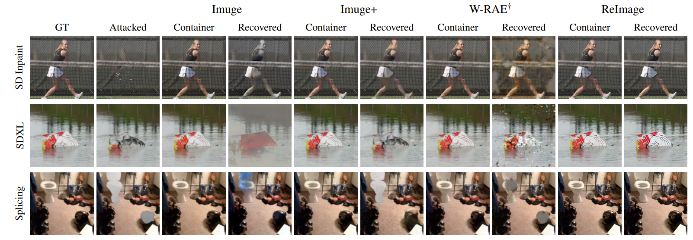
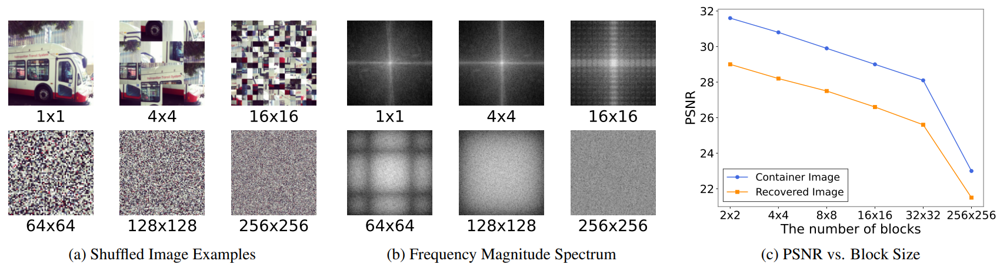
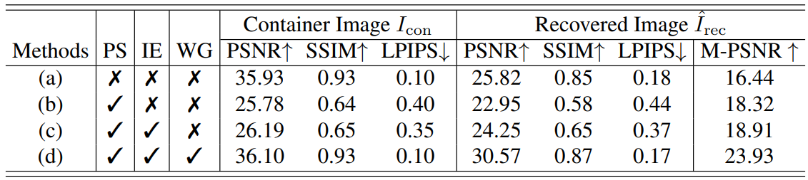
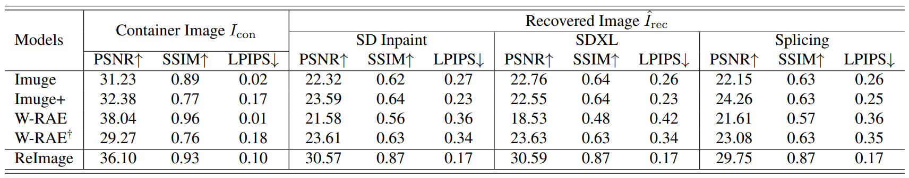
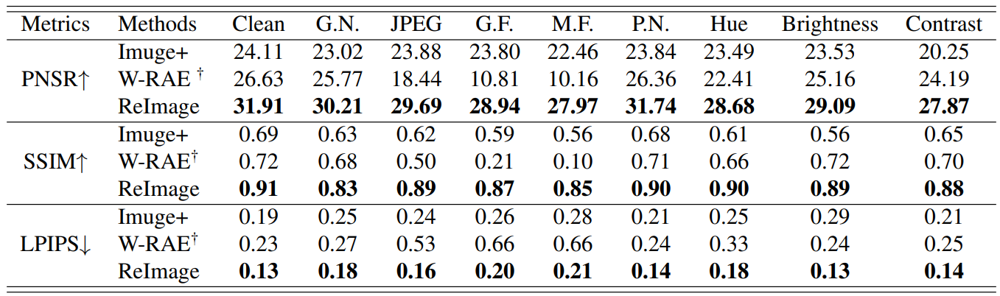
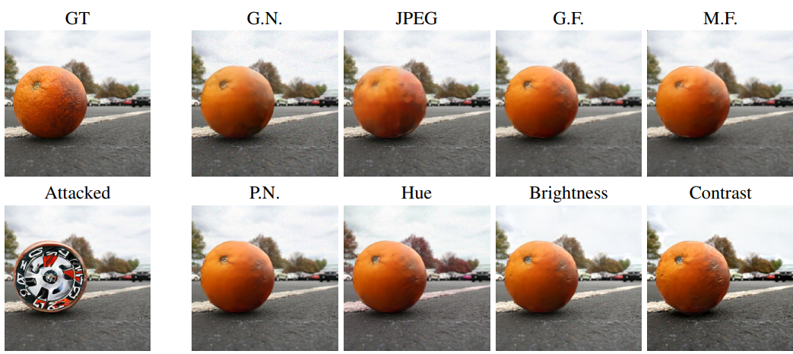
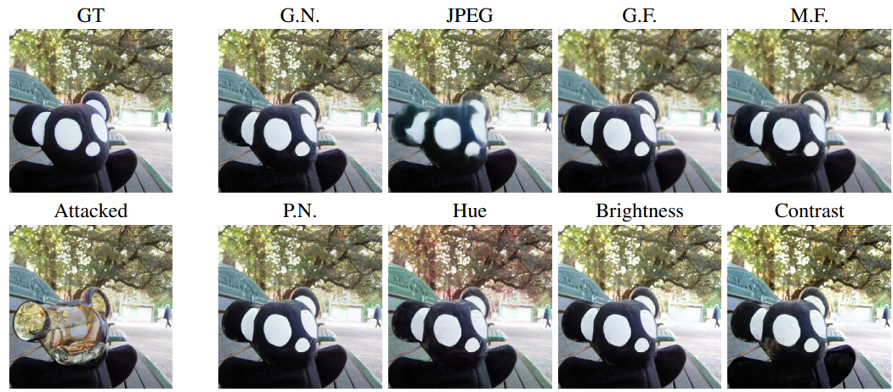

The rapid growth of Artificial Intelligence-Generated Content (AIGC) raises concerns about the authenticity of digital media. In this context, image self-recovery, reconstructing original content from its manipulated version, offers a practical solution for understanding the attacker's intent and restoring trustworthy data. However, existing methods often fail to accurately recover tampered regions, falling short of the primary goal of self-recovery. To address this challenge, we propose ReImage, a neural watermarking-based self-recovery framework that embeds a shuffled version of the target image into itself as a watermark. We design a generator that produces watermarks optimized for neural watermarking and introduce an image enhancement module to refine the recovered image. We further analyze and resolve key limitations of shuffled watermarking, enabling its effective use in self-recovery. We demonstrate that ReImage achieves state-of-the-art performance across diverse tampering scenarios, consistently producing high-quality recovered images. The code and pretrained models will be released upon publication.

Overall architecture of the proposed methods Recent advancements in generative AI have simplified the creation of hyper-realistic forged media, posing significant risks to societal trust and information integrity. To address this, we propose ReImage, a novel self-recovery framework based on neural watermarking that reconstructs the original content from its tampered version. Unlike traditional methods that only localize alterations, ReImage embeds a shuffled version of the original image into itself, ensuring that recovery data remains intact even if specific regions are corrupted. We successfully overcome the technical challenge where increased high-frequency components from shuffling typically degrade extraction accuracy in neural networks. The framework integrates a specialized watermark generator and an image enhancement module to restore fine-grained structural and semantic details that previous models often lost. Consequently, ReImage achieves state-of-the-art performance across diverse tampering scenarios, providing high-fidelity restorations suitable for professional and legal applications.

Effects of Pixel Shuffling.In our framework, given a target image Iorg, module (a) generates a secret image Isec optimized for watermarking. The image is shuffled to obtain S(Isec), which is then embedded into the cover image Icov—identical to Iorg—via module (b), yielding the container image Icon. An attacker may generate a tampered image using an AI tool, resulting in the attacked image Iatt. During image self-recovery, Noise Estimator predicts the discarded noise component Înoise, which is used in module (c) to recover the shuffled secret image S(Îsec) from Iatt. This image is then unshuffled to obtain Îsec and passed through module (d) to reconstruct the target image Îorg. Module (e) refines Îorg using contextual information, producing an enhanced recovered image Îenh. Finally, module (f) locates tampered regions and restores them using corresponding untampered areas from Iatt, yielding Îrec.

Impact of Core Components in ReImage. ...

Comparison of Different Methods.(a) Visualization of pixel-shuffled images with different grid configurations, defining how the image is divided into equally sized patches: finer grids introduce higher variance between neighboring pixels, indicating increased highfrequency content. (b) Magnitude spectra of the images in (a), obtained via FFT: a brighter center indicates dominant low-frequency content, suggesting a smoother image. As the patch size decreases, spectral energy spreads outward, indicating an increase in highfrequency components. (c) PSNR of container and recovered images under varying the grid configurations: both degrade significantly as the grid becomes finer, due to the increased high-frequency component.

Robustness Evaluation.We evaluate robustness of models by measuring the quality of recovered images under six common degradation types: Gaussian Noise (G.N.), JPEG Compression (JPEG), Gaussian Filter (G.F.), Median Filter (M.F.), Poisson Noise (P.N.), Hue Adjustment, Brightness Adjustment and Contrast Adjustment, along with “Clean” where no degradation is applied. Note that † indicates models retrained with these degradations
Qualitative Results of Different Methods Visual tampering is simulated as outlined in Tab. 2. We compare our method with Imuge, Imuge+, and W-RAE†, showing that our approach yields clearer and more complete restorations.


Robustness under DegradationWe qualitatively evaluate the robustness of ReImage under eight common degradation types—Gaussian Noise (G.N.), JPEG Compression (JPEG), Gaussian Filter (G.F.), Median Filter (M.F.), Poisson Noise (P.N.), Hue Adjustment, Brightness Adjustment and Contrast Adjustment.